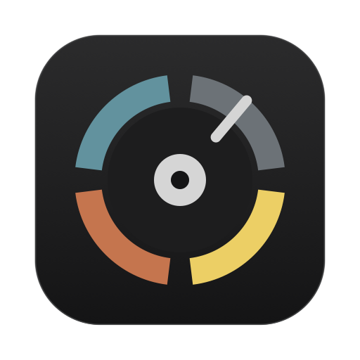
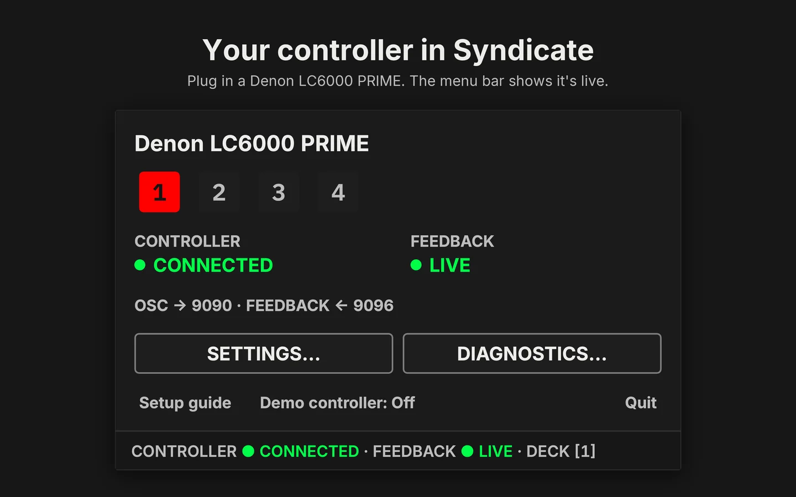
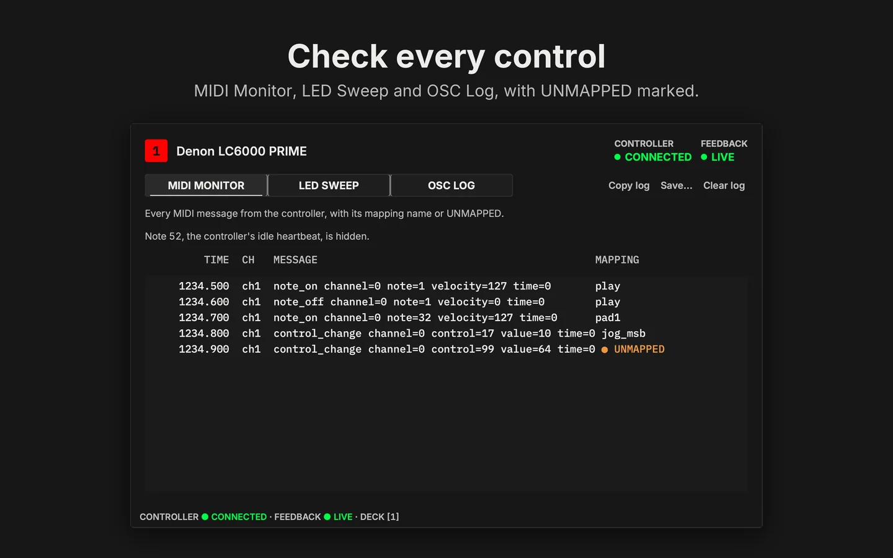
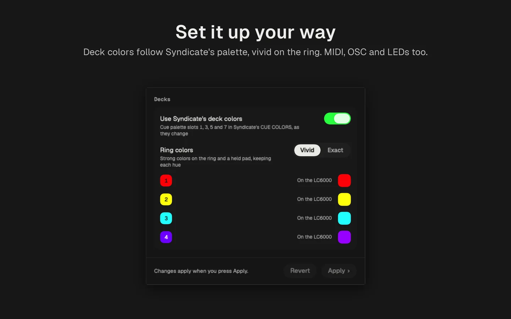

Your controller, fully in the mix.
DeckBridge is a small Mac menu-bar app that connects a Denon LC6000 PRIME to the Syndicate DJ app through Syndicate's OSC interface. The jog wheel and pitch fader work at full resolution, and the controller's LEDs follow what's playing.
macOS 26 or later. Free. Works alongside Syndicate; not made by or affiliated with Untitled Audio or Denon DJ.

What it does
Full-resolution control
The 14-bit jog wheel and pitch fader reach Syndicate at full resolution. Pickup keeps the tempo from jumping when the fader and the screen disagree.
Four decks, one controller
The LC6000's own deck layers pick decks 1 to 4. Switching releases anything held and repaints the lights.
LEDs that follow the music
Play, Cue, Sync and the pads light from Syndicate's state. Hot cues show their colors, and the jog ring shows the deck's color.
Safe recovery
Unplugging, sleeping the Mac or quitting releases every held control first. Plug back in and the lights come back.
Diagnostics built in
A MIDI monitor, an LED sweep and an OSC log show exactly what's coming in and going out.
Try it without hardware
A demo controller plays a short script against a simulated session, so you can see it work before plugging anything in.
Screenshots




